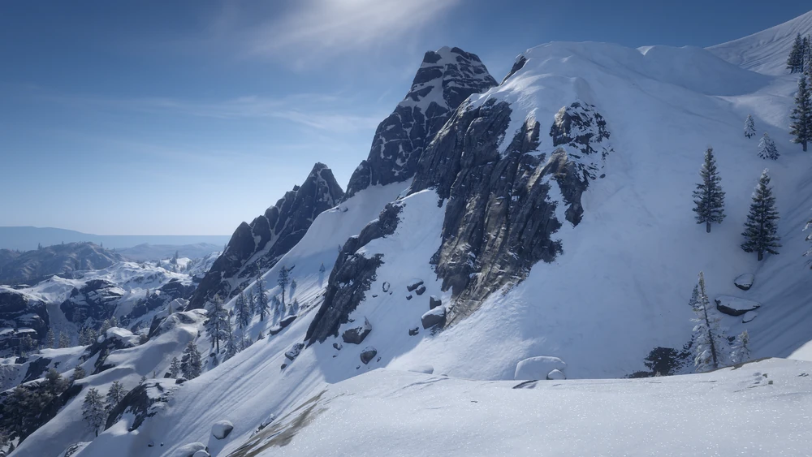
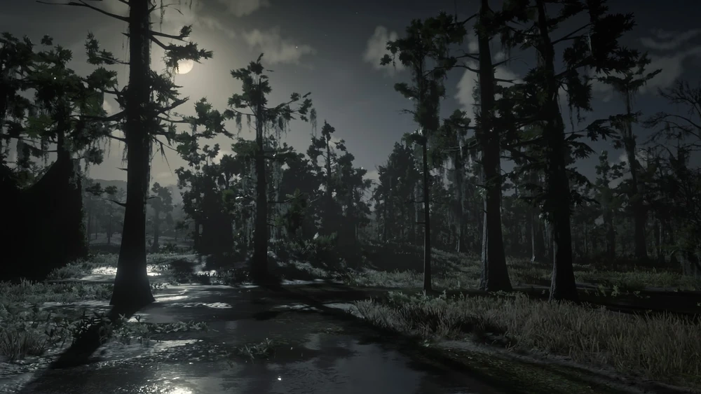
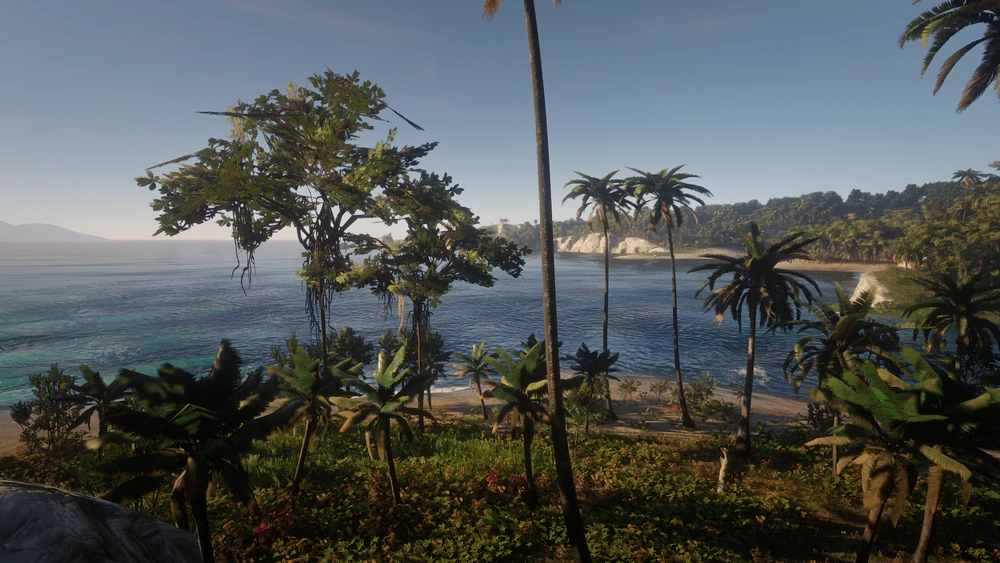

The World Of Red Dead
The World of Red Dead serves as the setting of the Red Dead series. The series primarily takes place in the real-life continent of North America.
United States of America
In the Red Dead franchise, the vast majority of locations are based on towns and states found in the real-life United States of America. The Old West genre of the series makes the United States a logical choice for the primary setting.
Main Locations:
- New Austin — Geographically, New Austin appears to correspond with Arizona, New Mexico, and West Texas; from the geographic perspective of the Red Dead Redemption games, as well as terrain clues in off-limits areas, it appears that areas representing central and eastern Texas exist between New Austin (and its Mexican southern neighbor, Nuevo Paraíso) and the state of Lemoyne.
- West Elizabeth — West Elizabeth is an amalgamation of several states in the Western United States. Geographically, West Elizabeth appears to correspond roughly to Texas, Utah, Kansas, and Colorado, although visually Big Valley and Tall Trees more closely resemble rural California.
- Ambarino — Ambarino takes influence from many states of the Rocky Mountains such as Colorado, Wyoming, Montana, and Idaho; its approximate geographic location seems to correspond best with Colorado, and the state's name suggests this (Ambarino means 'amber' in Spanish, while Colorado means 'reddish').
- New Hanover — New Hanover, for the most part, is a widespread grassland. It combines elements from several states including: Oklahoma, Arkansas, Nebraska, Kansas, Colorado, Wyoming, and South Dakota.
- Lemoyne — Lemoyne is directly based on the State of Louisiana, the two even share similar names. A giant forest-like swamp near the Gulf of Mexico, both Lemoyne and Louisiana have significant metropolitan areas (Saint Denis and New Orleans, respectively), as well as French/African-American heritage and a history involving the Civil War.



.webp)

Mexico
Mexico also serves as a popular setting in the Red Dead franchise, playing a role in both and Red Dead Revolver and Red Dead Redemption. Although it is mentioned sparingly in the second Redemption game, Mexico is inaccessible without glitches.
Main Locations:
- Nuevo Paraíso — Nuevo Paraíso corresponds with Nuevo Leon, while its geographic elements resemble Sonora as well as the American states of Arizona and Utah. It also draws influence from the Mexican states Tamaulipas, Coahuila, and Chihuahua.
The Caribbean
The Caribbean is a location briefly encountered in the fifth chapter of Red Dead Redemption 2.
Main Locations:
-

- Guarma — Guarma corresponds with Inagua geographically while drawing heavy influence from Cuba.